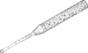

curettage

Definition: Curettage ( or ), in medical procedures, is the use of a curette (French, meaning scoop) to remove tissue by scraping or scooping.Curettages are also a method of abortion. It has been replaced by vacuum aspiration over the last decade.Curettage has been used to treat teeth affected by periodontitis.
Source: Wikipedia
Wikipedia Page
Wikidata Page